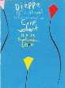
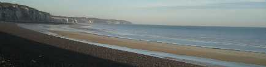
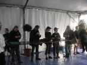
Bien sûr, on commence par un petit briefing pour présenter Laurent, Sophie, Marcel, Jason, et tous les autres. Et ensuite, Dura Lex Sed Lex : pas de tentes ni de bannières coté public ! Beaucoup trouveront ça sévère et frustrant, même pour les spectateurs : le camp du drap d'or et les bannières font partie de l'ambiance de fête colorée et bigarrée des festivals de cerf-volant, y a qu'à voir l'inventivité dans ce domaine, même des tentes de tous genres, et le public suit avec plaisir le bric-à-brac étalé et les bricolages des cervolistes. Et puis la plupart des tentes ne montent pas assez haut pour cacher le spectacle au public, guère plus que les bandeaux publicitaires plaqués sur les barrières, en tous cas...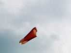
Mais bon, ça n'empêchera pas de voler, même si le premier week-end est plutôt violent et bien arrosé (surtout par le ciel, je veux dire).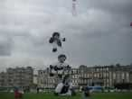
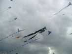
Le ciel devient même bien meublé : voilà 2 caissons de Michel Gressier qui portent les 2 queues bleues, le CV central est un Delta enrichi de Claude Lebourgeois, le bleu plus clair une création de Didier Ferment, le Worm vole en arrière plan et, en haut à droite, le beau CV de Jacques de Vierzon a changé avec bonheur sa queue jaunâtre pour une blanche (voir reportage sur Chambord à ce sujet).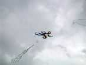
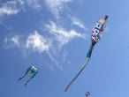
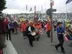
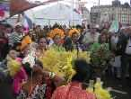
Le premier week-end, c'est aussi la parade colorée, cosmopolite et bruyante en ville.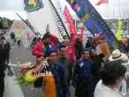
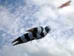
On revoit quelques créateurs moins présents ces temps-ci, comme Pierre Fabre et son grand "Bibendum".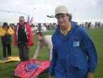
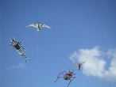
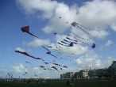
Il y a aussi beaucoup de grands cerfs-volants sur les 8 hectares de pelouse.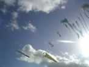
Des qui volent sur les pelouses comme celui de Michel Gressier, accompagné du noeud celte de Claude...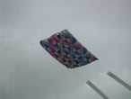
...ou des qui ont boycotté leurs aires réservées, là-bas tout au bout loin, pour voler sur la plage près du public, comme ce grand édredon, la pieuvre, la tortue, les geishas-édredon (voir plus loin) de Peter Lynn, ou l'équipe AWITA.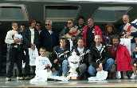
Le premier dimanche se termine aussi le trophée Taranis (2ème édition), créé par la branche cerf-volant de la FFVL, et qui fait concourir des clubs sur 6 disciplines (on dit un hexathlon ?) : ballet, combattant, combat de rokkakus, monofil, aérophoto, jardin du vent. C'est le CVC Jules Verne qui gagne. Le CVCF n'a présenté que 2 disciplines, on est quand même quatrième.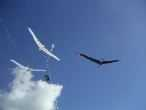
Albatros : on fait un vol de groupe, d'abord à trois, avec le mien, celui de Michel Gressier et celui des Mouchague (le noir) !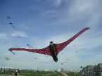
Un concurrent belge, inspiré de la même structure, mais différemment interprétée, arrivera trop tard pour participer au bal des Albatros.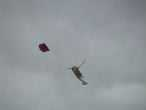
On en voit des cerfs-volants bizarres, ça fourmille dur dans le cerveau des créateurs !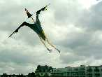
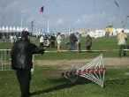
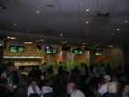
Lundi : Soirée Bowling. Au programme, sandwichs, boisson et partie de bowling. C'est une découverte pour certains, et tout le monde s'emploie de bon coeur mais on voit pas mal de gouttières... C'est Sylvain qui gagnera avec 177 (le record est à 180, dommage) !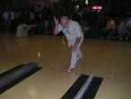
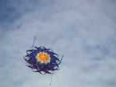 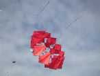 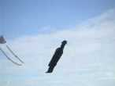 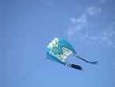
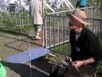
Uli présente ses plaques vibrantes qu'il sollicite de l'archet et sur lesquelles se dessinent des lignes de sable selon les noeuds et les ventres de vibration.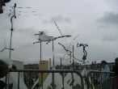
Robert présente ses arcs vibrants à la finition luxueuse. Certains ont un peu souffert d'une grande arche qui a été coupée et qui est venue tout ramasser...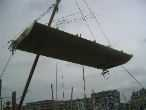
Il a aussi réalisé une harpe éolienne au son planant.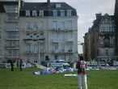
Li Ruo Xin a profité du vent faible pour sortir son oiseau qu'il manipule pour le faire cercler au-dessus de sa tête. D'accord, il y a des photos plus parlantes sur son site, n'hésitez pas à faire travailler monsieur Google.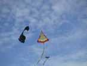
L'Eddy de Loïk est bien de lui : inversé, retourné et perpendiculaire. Le pied de Thérèse est un 4 lignes bien connu.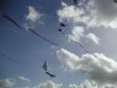
Loïk fait aussi voler son tabouret (je ne sais plus le nom qu'il lui donne) et, en bas, sa cathédrale (elle peut voler sans queue si le vent est assez musclé).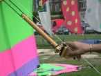
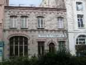
Les soirées, en semaine, c'est le plus souvent, pour notre bande, au "Jupiler", 2ème restaurant après l'Aguado, en face du marché couvert de Roland (vous savez, là où il débite des km de tube), à coté du siège du Manjha Club (photo de droite).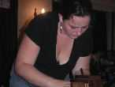
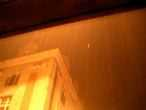
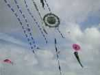
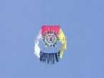
Une autre version de CV guatémaltèque, sans queue mais pleine de franges. Il faudra des vents solides pour le voir en l'air avec cette surface limitée.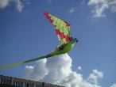
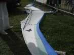
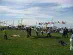
Le grand Wau-Lune arrive porté par sa troupe.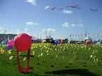
Les Neunoeils d'AWITA contemplent ces événements du milieu de leur splendide champ de blé (de Richon ?).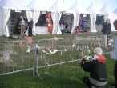
Thérèse a encore amélioré ses jardins, triomphe de l'esthétique de la finesse.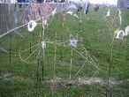
Elle a planté son jardin à coté de ses cerfs-volants, dur d'avoir plusieurs activités ! Moi, je n'ai pas fait voler mes oiseaux 2 lignes, ça fait trop loin pour surveiller tout.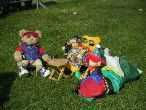
Les nounours attendent sagement leur largage en parachute en se dopant à la bière anglaise (y a pas de contrôle cette année, faut en profiter).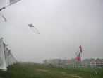
En semaine, il y a des moments creux quand il drache...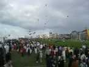
Mais sinon, en semaine comme en week-end, il y a eu sacrément du monde dans le village comme le long des aires !